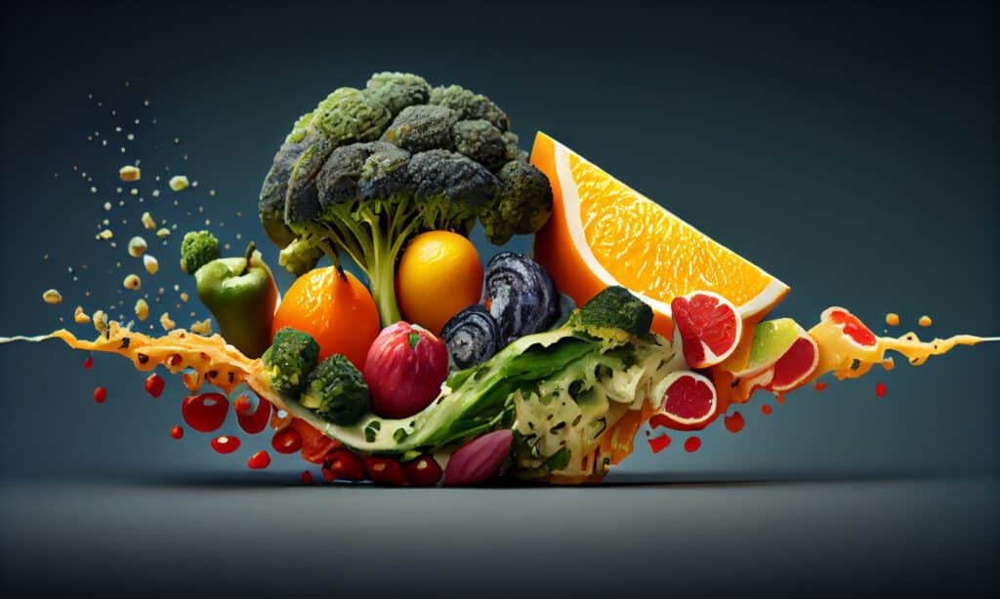
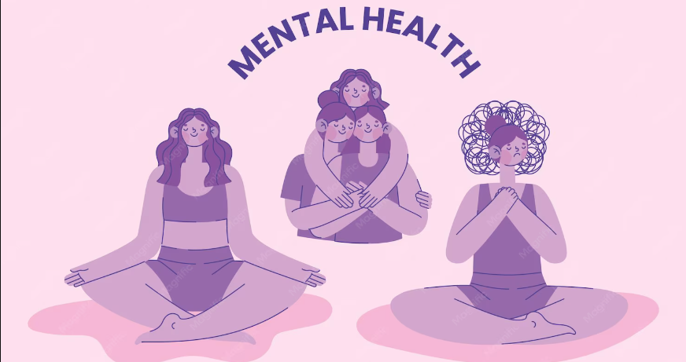
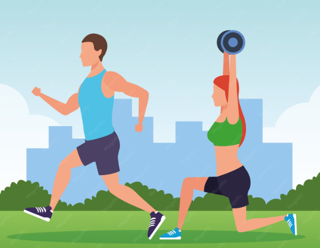
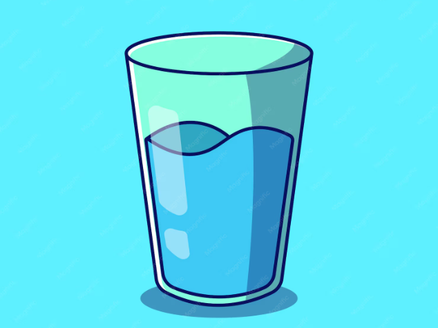
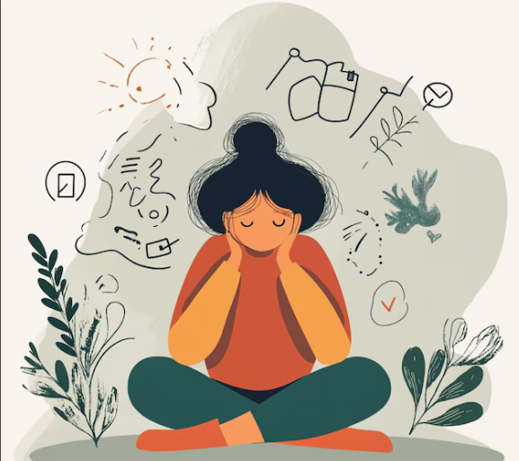

Alimentação Saudável
Uma alimentação saudável funciona como combustível vital para o corpo e a mente, fornecendo nutrientes essenciais que garantem energia diária, foco e o fortalecimento do sistema imunitário. Pela conexão entre o intestino e o cérebro, onde é produzida a maior parte da serotonina, comer bem melhora e regula diretamente o humor e a saúde mental.
Qualidade de Sono
Uma noite de sono reparador funciona como um pilar essencial para a restauração física e mental, permitindo que o cérebro processe memórias e regule adequadamente as emoções e o humor ao longo do dia.

Saúde Mental
A saúde mental representa um estado dinâmico de equilíbrio emocional e psicológico que capacita o indivíduo a reconhecer as suas próprias capacidades, lidar de forma resiliente com os estresses cotidianos, trabalhar de maneira produtiva e contribuir ativamente para a sua comunidade.

Atividade Física
Movimentar o corpo regularmente fortalece o coração, os músculos e os ossos, melhora a disposição e ajuda a controlar o peso. Além dos benefícios físicos, o exercício também reduz sintomas de ansiedade e depressão e melhora a qualidade do sono.

Hidratação
A água participa de praticamente todas as funções do organismo: regula a temperatura corporal, transporta nutrientes, lubrifica as articulações e auxilia a eliminação de toxinas. Manter-se hidratado ao longo do dia melhora a concentração e o desempenho físico.

Controle do Estresse
O estresse faz parte da vida, mas, quando se torna constante, pode prejudicar o sono, a imunidade e o coração. Técnicas como respiração profunda, meditação, pausas durante o trabalho e momentos de lazer ajudam o corpo e a mente a se recuperarem.